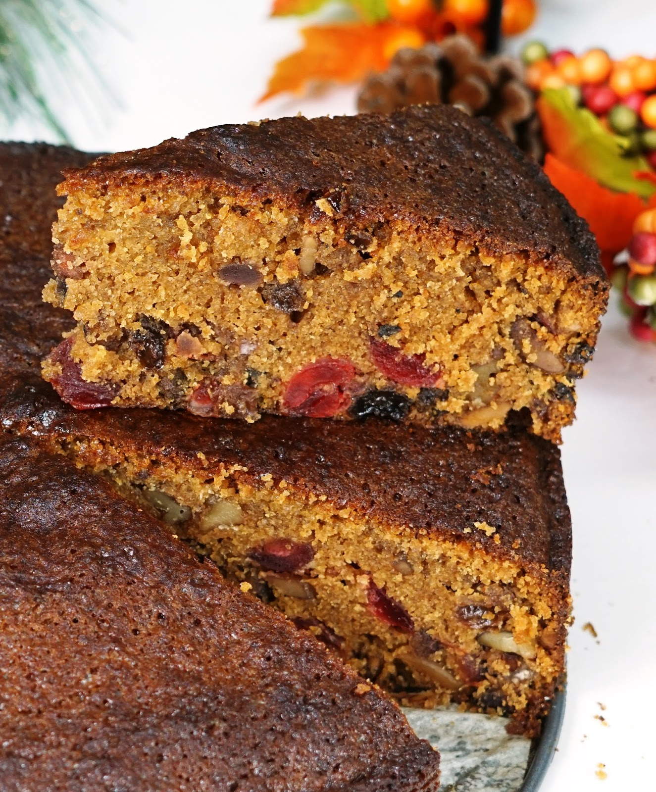

British Plum Cake

Descripton
Even though this cake has no alcohol in it. It taste absolutely delicious.
This cake can be made from start to finish in under 30 mins, Baking time extra.
Ingredients
- Black seedless raisins - 1 ½ cup
- Dates - 5
- Prunes - 5
- Tutti fruity - 2 tblsp
- Candied fruits - 2 tblsp
- Cashews - 3 tblsp
- Flour - 1 ½ cup
- Sugar - 1/2 cup + 1/4 cup for caramel
- Water - 1/3 cup + 1/2 cup
- Orange juice from 1
- Baking soda - 1 tsp
- Cinnamon powder - 1 tsp
- Pumpkin pie spice optional - 1 tsp
- Ginger powder - 1 tsp
- Egg - 2
- Vanilla extract -1 tsp
- Butter 100 grams
Instructions
- Preheat oven to 180 degree c.
- Line a 8 inch round pan with parchment paper. Grease it lightly.
- Now take all dried fruits and nuts in a sauce pan.
- Add 1/2 cup water and orange and mix well
- cook it for 2 mins.
- Set aside to cool.
- Now in a separate pan take sugar and cook on medium heat till it caramelizes.
- Add ⅓ cup water and mix well till smooth.
- Now in a bowl, take butter, sugar and vanilla. Cream well.
- Add in eggs and mix well.
- Add in caramel water and mix well
- Add in spice powders, flour and baking soda. Fold gently,
- Add in the dry fruit mixture. Fold gently.
- Spoon into the pan and bake for 45 mins and 1 hour.
- Remove and cool completely. Serve.
back to home